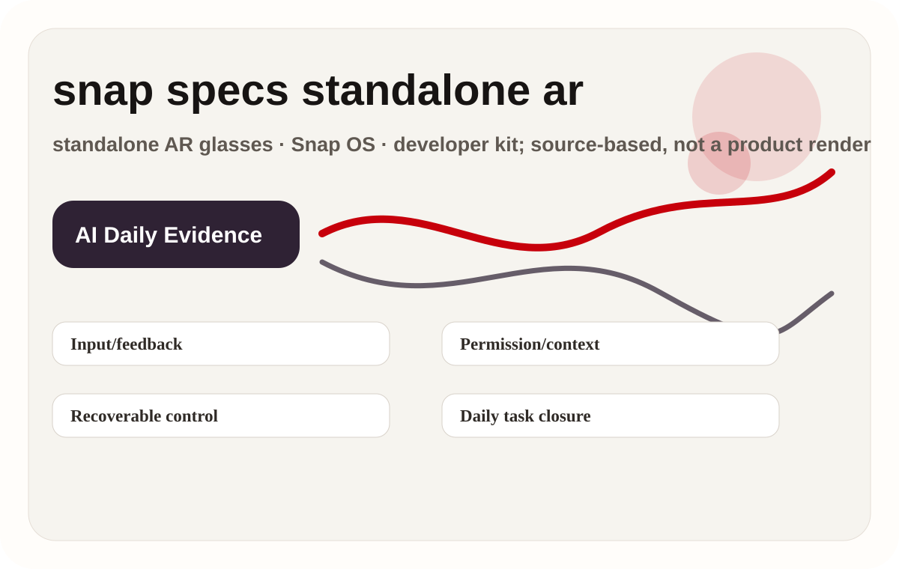
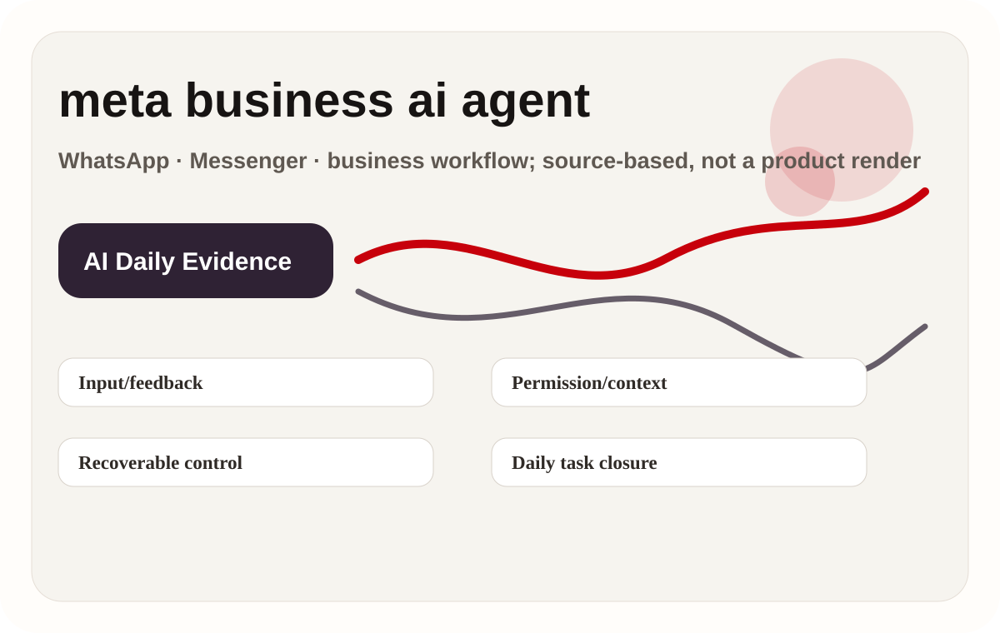
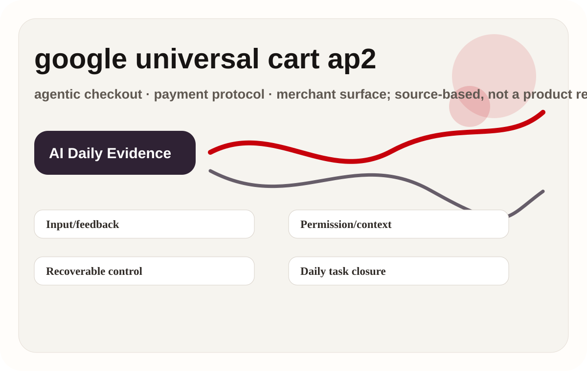
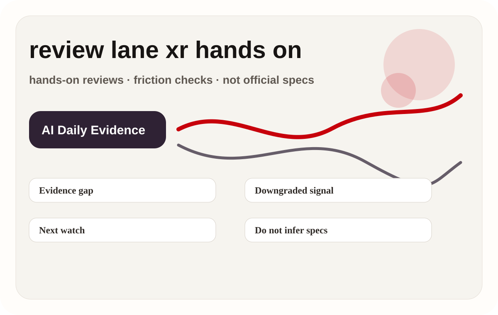
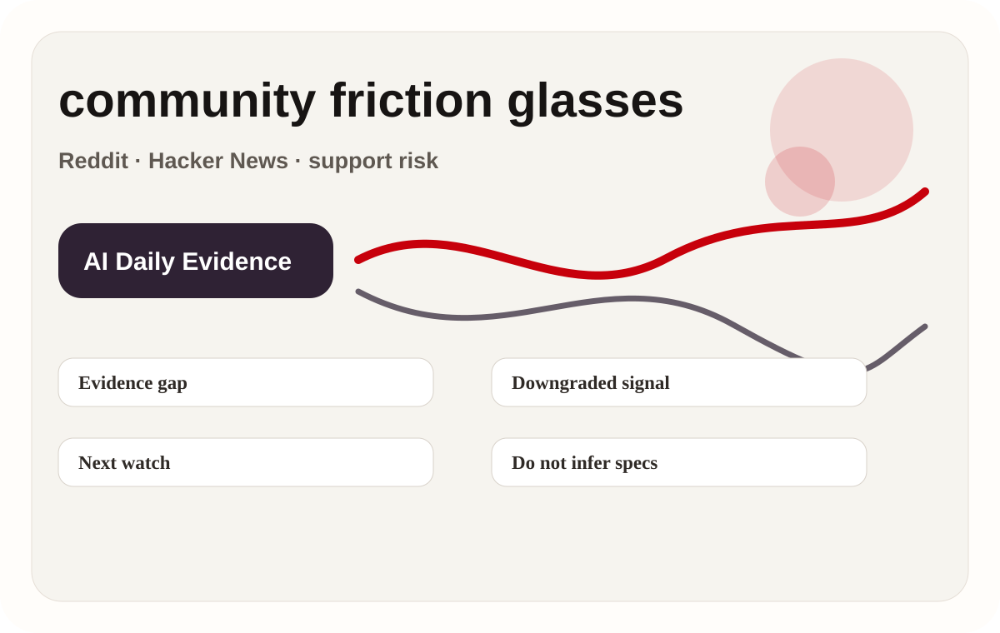
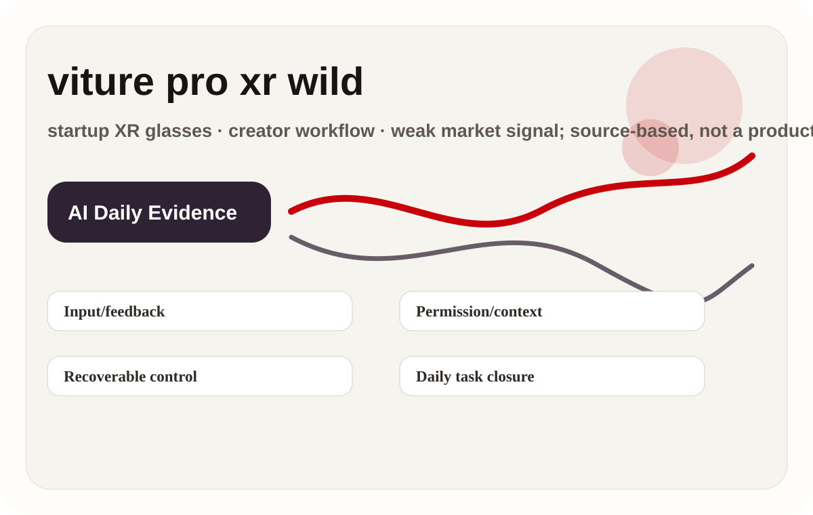
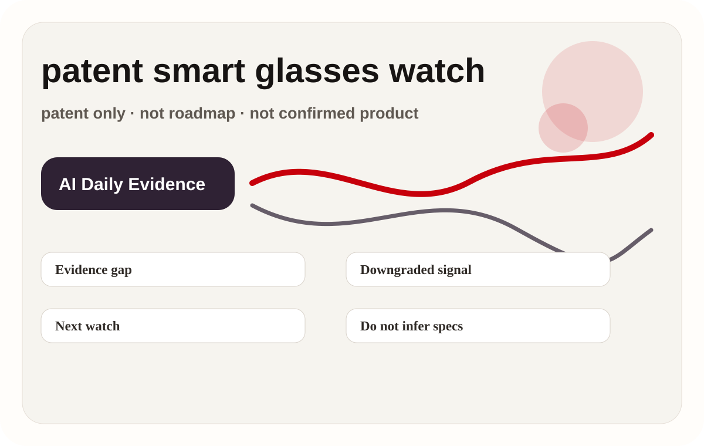
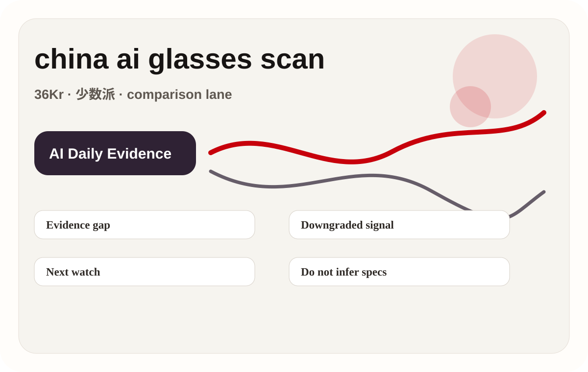
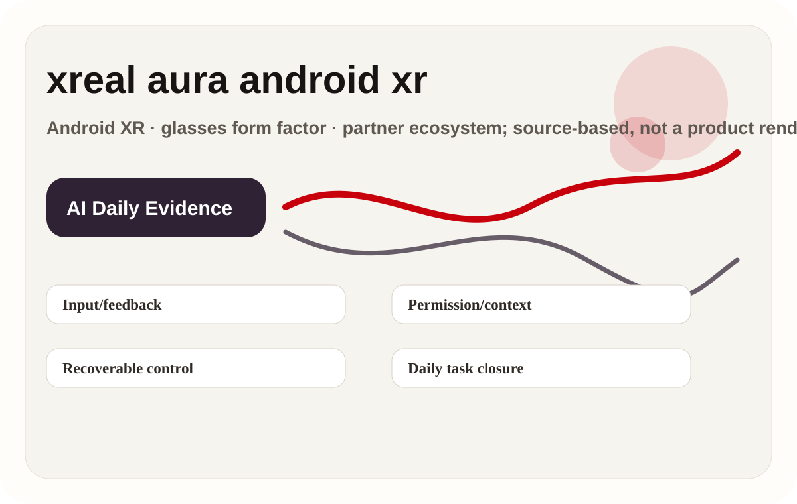

A standalone AR glasses product for developers and early consumers. The source set presents Snap OS, Lens/Spectacles developer tooling, and the glasses body as the camera, display, voice, and spatial input surface. The important product boundary is the default entry point: whether the user starts from a device, a chat thread, a cart, or a developer runtime. That boundary determines what context can be collected, what feedback can be shown, and how much recovery the interface must provide.
01
2026-06-19 · America/Toronto
AI Daily
AI entry points shift into glasses, messaging threads, and authorized transactions
Today is not another chat-box day; AI entry points are moving into glasses, messaging, payments, and XR developer stacks.
Snap Specs is the cover because it puts AR display, camera, voice, spatial input, and developer ecosystem into one standalone device.
The product read depends on wearability, permission feedback, developer closure, and downgraded weak-signal lanes, not launch language alone.
HCIAI hardwaresmart glassesagentic commerceAndroid XRdeveloper surfacewearable AI
Sources: Cover source

02
Issue map
Structure before evidence
Read today through eight lanes: official products, reviews, community friction, wild products, research, patents, China, and global signals.
03
Official
Official
Official Desk
confirmed product · high / official product and developer surface
Snap Specs: AR glasses move from phone accessory toward standalone AI device
developer surface · high / platform announcement and developer tooling
Qualcomm Reality Elite + START: XR entry competition lands first in developer stack
developer surface · high / official business and messaging surface
Meta Business AI Agent: agentic commerce grows first inside messaging threads
developer surface · high / official shopping and payment protocol surface
Google Universal Cart / AP2: shopping agents need authorized payment, not just recommendations
04
Official Desk · 1/2
Official
confirmed product · high / official product and developer surface
accessed 2026-06-19
Snap Specs: AR glasses move from phone accessory toward standalone AI device
Product: Snap Specs. A standalone AR glasses product for developers and early consumers. The source set presents Snap OS, Lens/Spectacles developer tooling, and the glasses body as the camera, display, voice, and spatial input surface.
The user wears the glasses, invokes Lens or AR apps through voice, hand or spatial input, and sees results in the near-eye display. The phone is not the primary interaction surface; developer tooling packages the experience for Spectacles. The flow should be judged at task level, not feature level: what the user asks, what context is captured, where the result appears, when the system asks for confirmation, and how the user returns to manual control if the agent is wrong.
The disclosed stack includes Snap OS, the Spectacles developer surface, cameras, display, and spatial interaction. Exact chipset, weight, battery, brightness, and launch-region details are source-bound; any missing specification remains source not stated. This issue treats every missing number conservatively. If a source does not state battery, weight, sensor layout, display capability, price, region, API maturity, or supported payment rail, the field remains source not stated instead of inferred from adjacent products.
Concrete uses include hands-free messaging, spatial navigation, collaborative Lens experiences, real-time capture, lightweight creation, and AR prototyping. The HCI value is reducing the phone-unlock and app-picking step. The useful HCI question is whether those scenes happen often enough to justify a new entry point. A product can look impressive in launch video but still fail if it does not reduce repeated daily friction.
It addresses phone-first AR friction: pick up device, open app, aim at the scene, then explain context. Glasses bind input to environment and shorten the path from noticing something to acting on it. The pain point is meaningful only when the product removes a step the user already dislikes. Extra autonomy is not automatically value; it must reduce explanation, switching, waiting, setup, or post-error cleanup.
05
Official Desk · 2/2
Official
confirmed product · high / official product and developer surface
accessed 2026-06-19
Snap Specs: AR glasses move from phone accessory toward standalone AI device
Product: Snap Specs. A standalone AR glasses product for developers and early consumers. The source set presents Snap OS, Lens/Spectacles developer tooling, and the glasses body as the camera, display, voice, and spatial input surface.
The new technology signal is the merge of OS-level AR shell and developer Lens surface, placing AI, vision, and spatial input in one wearable loop. It is closer to a wearable app platform than to a camera gadget. The design risk is that new technical capability can make the interface less legible. Each product therefore needs explicit visible state, source/date labels, permission boundaries, and a path back to user-controlled interaction.
The official and developer pages confirm the product surface. Purchase eligibility, regions, delivery batches, price, and consumer rollout must follow the current Snap page; unstated details are not inferred. Availability is separated from capability because early hardware, developer previews, and protocol announcements often mix shipping facts with roadmap language. The dossier does not treat a demo, SDK, or partner mention as broad consumer availability.
The largest unknowns are all-day wear, battery, thermals, social acceptance, bystander privacy, developer supply, and failure feedback. Review/community signals should watch wear time, recording indicators, display legibility, and whether it replaces phone use. The unknowns are not secondary details; they are the product. Wear time, privacy cues, merchant liability, payment reversibility, developer supply, and support policy decide whether the new interface becomes a habit or a novelty.
Product verdict: this is the strongest cover story because it binds AI hardware, AR display, developer ecosystem, and wearable HCI into one device. Success is not feature count; it is wear time and how many daily loops developers can close. The practical product read is to watch whether the interface closes real loops under user control. A credible AI product should say what it knows, what it is doing, what remains uncertain, and how the user can stop, edit, undo, escalate, or audit the action.
06
Official Desk · 1/2
Official
developer surface · high / platform announcement and developer tooling
accessed 2026-06-19
Qualcomm Reality Elite + START: XR entry competition lands first in developer stack
Product: Snapdragon Reality Elite + START. An XR hardware platform and developer tooling combination for OEMs and developers building smart glasses, MR headsets, and spatial apps, not an end-user app by itself.
An XR hardware platform and developer tooling combination for OEMs and developers building smart glasses, MR headsets, and spatial apps, not an end-user app by itself. The important product boundary is the default entry point: whether the user starts from a device, a chat thread, a cart, or a developer runtime. That boundary determines what context can be collected, what feedback can be shown, and how much recovery the interface must provide.
End users experience lighter devices, steadier tracking, lower-latency display, and app compatibility. Developers use START or Spaces-like tooling to connect input, scene understanding, and rendering pipelines to target hardware. The flow should be judged at task level, not feature level: what the user asks, what context is captured, where the result appears, when the system asks for confirmation, and how the user returns to manual control if the agent is wrong.
Official signals include the Snapdragon XR platform, Reality Elite naming, and START developer surface. Specific OEM devices, sensor count, display module, memory, battery, and price are not terminal-device facts confirmed by this source. This issue treats every missing number conservatively. If a source does not state battery, weight, sensor layout, display capability, price, region, API maturity, or supported payment rail, the field remains source not stated instead of inferred from adjacent products.
Use cases include smart-glasses reference designs, enterprise training, remote collaboration, industrial assistance, lightweight MR apps, gesture/eye/spatial demos, and prototype validation for soft/hardware teams. The useful HCI question is whether those scenes happen often enough to justify a new entry point. A product can look impressive in launch video but still fail if it does not reduce repeated daily friction.
It addresses XR ecosystem fragmentation: hardware makers need SoC, SDK, and samples; developers need stable device abstraction; experience teams need predictable input and feedback capabilities. The pain point is meaningful only when the product removes a step the user already dislikes. Extra autonomy is not automatically value; it must reduce explanation, switching, waiting, setup, or post-error cleanup.
07
Official Desk · 2/2
Official
developer surface · high / platform announcement and developer tooling
accessed 2026-06-19
Qualcomm Reality Elite + START: XR entry competition lands first in developer stack
Product: Snapdragon Reality Elite + START. An XR hardware platform and developer tooling combination for OEMs and developers building smart glasses, MR headsets, and spatial apps, not an end-user app by itself.
The new technology is packaging silicon capability, reference implementation, and developer tooling as a more complete platform handoff, so each glasses or headset maker does not define an agentic spatial stack from zero. The design risk is that new technical capability can make the interface less legible. Each product therefore needs explicit visible state, source/date labels, permission boundaries, and a path back to user-controlled interaction.
This is a developer/platform surface, not proof that consumers can buy a specific Reality Elite device today. Availability should be split: platform announcement confirmed; terminal device availability source not stated. Availability is separated from capability because early hardware, developer previews, and protocol announcements often mix shipping facts with roadmap language. The dossier does not treat a demo, SDK, or partner mention as broad consumer availability.
The risk is that platform capability without enough OEM designs and app ecosystem stays at demo level. HCI still needs validation around input latency, calibration, failure state, and consistent wear feedback. The unknowns are not secondary details; they are the product. Wear time, privacy cues, merchant liability, payment reversibility, developer supply, and support policy decide whether the new interface becomes a habit or a novelty.
Product verdict: this is not consumer product news, but it changes the supply side of XR product surfaces. Design teams should track how START turns spatial input into reusable controls. The practical product read is to watch whether the interface closes real loops under user control. A credible AI product should say what it knows, what it is doing, what remains uncertain, and how the user can stop, edit, undo, escalate, or audit the action.
08
Official Desk · 1/2
Official
developer surface · high / official business and messaging surface
accessed 2026-06-19
Meta Business AI Agent: agentic commerce grows first inside messaging threads
Product: Meta Business AI Agent. A messaging AI agent surface for businesses, connected to existing conversation entry points such as WhatsApp and Messenger, putting support, product explanation, lead capture, and pre-purchase advice into one thread.

A messaging AI agent surface for businesses, connected to existing conversation entry points such as WhatsApp and Messenger, putting support, product explanation, lead capture, and pre-purchase advice into one thread. The important product boundary is the default entry point: whether the user starts from a device, a chat thread, a cart, or a developer runtime. That boundary determines what context can be collected, what feedback can be shown, and how much recovery the interface must provide.
A user enters from an ad, business profile, or existing chat. The agent answers product or service questions, collects preferences, hands off to a human when needed, or guides purchase. The business configures knowledge, policies, handoff, and operations. The flow should be judged at task level, not feature level: what the user asks, what context is captured, where the result appears, when the system asks for confirmation, and how the user returns to manual control if the agent is wrong.
Sources confirm the Meta business messaging and AI agent surface. Underlying model, training data, RAG pipeline, payment coverage, regions, and industry constraints are not fully specified in public sources, so unstated details remain source not stated. This issue treats every missing number conservatively. If a source does not state battery, weight, sensor layout, display capability, price, region, API maturity, or supported payment rail, the field remains source not stated instead of inferred from adjacent products.
Concrete uses include small-business support, cross-time-zone Q&A, product comparison, appointment booking, after-sales entry, ad-lead filtering, and automation of repetitive questions. Users do not need to install a new app. The useful HCI question is whether those scenes happen often enough to justify a new entry point. A product can look impressive in launch video but still fail if it does not reduce repeated daily friction.
It addresses slow merchant response, user aversion to forms, scattered support knowledge, and missing pre-purchase information. For users, a familiar chat thread lowers start cost. The pain point is meaningful only when the product removes a step the user already dislikes. Extra autonomy is not automatically value; it must reduce explanation, switching, waiting, setup, or post-error cleanup.
09
Official Desk · 2/2
Official
developer surface · high / official business and messaging surface
accessed 2026-06-19
Meta Business AI Agent: agentic commerce grows first inside messaging threads
Product: Meta Business AI Agent. A messaging AI agent surface for businesses, connected to existing conversation entry points such as WhatsApp and Messenger, putting support, product explanation, lead capture, and pre-purchase advice into one thread.
The new technology is not merely a chatbot but a business workflow agent: it must understand product context, retain conversational state, manage handoff, and carry next actions inside a messaging platform. The design risk is that new technical capability can make the interface less legible. Each product therefore needs explicit visible state, source/date labels, permission boundaries, and a path back to user-controlled interaction.
Official pages confirm the product direction. Countries, merchant eligibility, languages, integration path, pricing, and compliance limits follow current Meta and WhatsApp documentation. Availability is separated from capability because early hardware, developer previews, and protocol announcements often mix shipping facts with roadmap language. The dossier does not treat a demo, SDK, or partner mention as broad consumer availability.
Core unknowns are hallucination, support liability, privacy boundary, payment/refund path, handoff timing, and regional policy. In UX terms, a wrong answer damages trust more than a slow reply. The unknowns are not secondary details; they are the product. Wear time, privacy cues, merchant liability, payment reversibility, developer supply, and support policy decide whether the new interface becomes a habit or a novelty.
Product verdict: this is a low-friction entry for agentic commerce because users are already in messaging apps. Near-term success depends on support facts, human handoff, and transaction responsibility, not showy autonomy. The practical product read is to watch whether the interface closes real loops under user control. A credible AI product should say what it knows, what it is doing, what remains uncertain, and how the user can stop, edit, undo, escalate, or audit the action.
10
Official Desk · 1/2
Official
developer surface · high / official shopping and payment protocol surface
accessed 2026-06-19
Google Universal Cart / AP2: shopping agents need authorized payment, not just recommendations
Product: Google Universal Cart / Agent Payments Protocol. A product and developer-protocol combination for agentic shopping: the front end is a cross-merchant shopping and checkout experience, while the back end lets agents execute payments under authorization.

A product and developer-protocol combination for agentic shopping: the front end is a cross-merchant shopping and checkout experience, while the back end lets agents execute payments under authorization. The important product boundary is the default entry point: whether the user starts from a device, a chat thread, a cart, or a developer runtime. That boundary determines what context can be collected, what feedback can be shown, and how much recovery the interface must provide.
The user states purchase constraints, the agent compares items, adds to cart, explains merchant, price, and delivery differences, and triggers payment inside an authorization boundary. Merchants and payment parties must pass verifiable intent, amount, object, and user consent clearly. The flow should be judged at task level, not feature level: what the user asks, what context is captured, where the result appears, when the system asks for confirmation, and how the user returns to manual control if the agent is wrong.
Sources disclose the Google Shopping / Universal Cart surface and AP2 developer protocol. Supported merchants, payment networks, regions, fees, refunds, and risk rules follow official docs; unstated details are source not stated. This issue treats every missing number conservatively. If a source does not state battery, weight, sensor layout, display capability, price, region, API maturity, or supported payment rail, the field remains source not stated instead of inferred from adjacent products.
Use cases include replenishment, travel or event purchasing, multi-merchant comparison, family shopping lists, small business purchasing, and repeat buys with clear constraints. It moves agents from advising to completing transactions. The useful HCI question is whether those scenes happen often enough to justify a new entry point. A product can look impressive in launch video but still fail if it does not reduce repeated daily friction.
It addresses copying constraints across merchants, re-entering addresses, comparing delivery, and confirming prices. For merchants, it answers how agent-driven traffic enters checkout with trust. The pain point is meaningful only when the product removes a step the user already dislikes. Extra autonomy is not automatically value; it must reduce explanation, switching, waiting, setup, or post-error cleanup.
11
Official Desk · 2/2
Official
developer surface · high / official shopping and payment protocol surface
accessed 2026-06-19
Google Universal Cart / AP2: shopping agents need authorized payment, not just recommendations
Product: Google Universal Cart / Agent Payments Protocol. A product and developer-protocol combination for agentic shopping: the front end is a cross-merchant shopping and checkout experience, while the back end lets agents execute payments under authorization.
The new technology is protocolizing consent, intent, cart, payment, and merchant state. The HCI challenge is translating machine-executable authorization into user-readable confirmation and reversible state. The design risk is that new technical capability can make the interface less legible. Each product therefore needs explicit visible state, source/date labels, permission boundaries, and a path back to user-controlled interaction.
The official announcement and developer page confirm the direction. Merchant coverage, API access, countries, and consumer availability depend on Google's current rollout; the protocol's existence does not imply universal launch. Availability is separated from capability because early hardware, developer previews, and protocol announcements often mix shipping facts with roadmap language. The dossier does not treat a demo, SDK, or partner mention as broad consumer availability.
Unknowns include returns, mistaken purchase, substitutions, price changes, inventory changes, minors or family authorization, and dispute flow. The largest UX risk is a user believing they authorized A while the system executes B. The unknowns are not secondary details; they are the product. Wear time, privacy cues, merchant liability, payment reversibility, developer supply, and support policy decide whether the new interface becomes a habit or a novelty.
Product verdict: this is the software interface change to watch. The dividing line for agent commerce is not recommendation quality; it is trustworthy explanation, authorization, audit, and remedy around payment. The practical product read is to watch whether the interface closes real loops under user control. A credible AI product should say what it knows, what it is doing, what remains uncertain, and how the user can stop, edit, undo, escalate, or audit the action.
12
Reviews
Reviews
Review Desk
review/community friction · medium / media and hands-on scan
Review lane scan: hands-on reports were not promoted into confirmed specs
13
Review Desk · 1/1
Reviews
review/community friction · medium / media and hands-on scan
accessed 2026-06-19
Review lane scan: hands-on reports were not promoted into confirmed specs
Product: Review lane scan. The review lane scanned hands-on and media reports around Snap Specs, XREAL Aura, and Android XR glasses. Only interface boundaries clearly stated by the sources were promoted: glasses display, developer surface, Android XR partnership, and wear/display experience. Media guesses about battery, price, production timing, or unstated parameters were not converted into confirmed dossier facts. Missing evidence remains long-wear comfort, outdoor legibility, thermals, real app ecosystem, and failure feedback. Next watch: independent reviews, teardowns, developer demos, and return or support discussions.

The review lane scanned hands-on and media reports around Snap Specs, XREAL Aura, and Android XR glasses. Only interface boundaries clearly stated by the sources were promoted: glasses display, developer surface, Android XR partnership, and wear/display experience. Media guesses about battery, price, production timing, or unstated parameters were not converted into confirmed dossier facts. Missing evidence remains long-wear comfort, outdoor legibility, thermals, real app ecosystem, and failure feedback. Next watch: independent reviews, teardowns, developer demos, and return or support discussions. This card is a source-lane scan, not a confirmed product.
Scan method: read the relevant official, media, community, or research lane and extract only signals that can be mapped back to product interaction.
Use case: decide whether the signal should become tomorrow's full dossier or be attached as a risk item to an existing product.
Pain point solved: prevents a weak evidence lane from being silently skipped and prevents weak evidence from being written as confirmed fact.
New technology: this card records interaction direction only; it does not claim a shipped technology.
Availability: source-lane coverage only; no consumer purchase fact is asserted.
Limits / unknowns: evidence is insufficient until official pages, reviews, long community tests, or developer docs appear.
Product verdict: keep as low-weight radar; do not promote into confirmed product without cross-source support.
14
Community
Community
Community Friction
review/community friction · low / community friction only
Community friction scan: glasses complaints cluster around wear, compatibility, and trust
15
Community Friction · 1/1
Community
review/community friction · low / community friction only
accessed 2026-06-19
Community friction scan: glasses complaints cluster around wear, compatibility, and trust
Product: Community friction scan. The community lane is used only as friction and risk evidence, not as a specification source. Reddit and Hacker News discussions provide a useful product signal: users ask whether the glasses can be worn all day, whether cables or adapters are required, whether prescription and nose support are comfortable, whether recording indicators reassure bystanders, and whether phone/computer connection is stable. Missing evidence is quantified retention, real return rate, and regional support quality. If official support FAQs, long user posts, or comparative reviews appear, specific friction should be attached to the relevant product dossier.

The community lane is used only as friction and risk evidence, not as a specification source. Reddit and Hacker News discussions provide a useful product signal: users ask whether the glasses can be worn all day, whether cables or adapters are required, whether prescription and nose support are comfortable, whether recording indicators reassure bystanders, and whether phone/computer connection is stable. Missing evidence is quantified retention, real return rate, and regional support quality. If official support FAQs, long user posts, or comparative reviews appear, specific friction should be attached to the relevant product dossier. This card is a source-lane scan, not a confirmed product.
Scan method: read the relevant official, media, community, or research lane and extract only signals that can be mapped back to product interaction.
Use case: decide whether the signal should become tomorrow's full dossier or be attached as a risk item to an existing product.
Pain point solved: prevents a weak evidence lane from being silently skipped and prevents weak evidence from being written as confirmed fact.
New technology: this card records interaction direction only; it does not claim a shipped technology.
Availability: source-lane coverage only; no consumer purchase fact is asserted.
Limits / unknowns: evidence is insufficient until official pages, reviews, long community tests, or developer docs appear.
Product verdict: keep as low-weight radar; do not promote into confirmed product without cross-source support.
16
Wild
Wild
Wild Desk
startup signal · medium / startup product and Product Hunt signal
VITURE Pro XR: wild XR glasses keep testing the real demand for portable big screens
17
Wild Desk · 1/2
Wild
startup signal · medium / startup product and Product Hunt signal
accessed 2026-06-19
VITURE Pro XR: wild XR glasses keep testing the real demand for portable big screens
Product: VITURE Pro XR glasses. A startup and consumer-hardware signal around portable display and XR glasses. It is not an AI OS platform, but it exposes whether users will accept wear, cable, power, and privacy costs for a glasses form.

A startup and consumer-hardware signal around portable display and XR glasses. It is not an AI OS platform, but it exposes whether users will accept wear, cable, power, and privacy costs for a glasses form. The important product boundary is the default entry point: whether the user starts from a device, a chat thread, a cart, or a developer runtime. That boundary determines what context can be collected, what feedback can be shown, and how much recovery the interface must provide.
The user connects a phone, handheld console, computer, or media device and projects the screen into near-eye display. Interaction usually depends on the external device, cable or adapter, and system input rather than a fully autonomous glasses agent. The flow should be judged at task level, not feature level: what the user asks, what context is captured, where the result appears, when the system asks for confirmation, and how the user returns to manual control if the agent is wrong.
Public sources confirm product and market signal. Optical parameters, weight, refresh, dimming, audio, accessories, and price must be checked on VITURE's current page. Product Hunt only indicates launch and discussion signal. This issue treats every missing number conservatively. If a source does not state battery, weight, sensor layout, display capability, price, region, API maturity, or supported payment rail, the field remains source not stated instead of inferred from adjacent products.
Use cases are travel viewing, handheld gaming, second-screen work, private big screen in hotels or flights, creator preview, and spatial-display trial. It serves the need for a big screen without carrying a monitor. The useful HCI question is whether those scenes happen often enough to justify a new entry point. A product can look impressive in launch video but still fail if it does not reduce repeated daily friction.
It solves the screen-size versus portability conflict, but not the full input and context problem. Users still handle connection, power, device compatibility, and long-wear comfort. The pain point is meaningful only when the product removes a step the user already dislikes. Extra autonomy is not automatically value; it must reduce explanation, switching, waiting, setup, or post-error cleanup.
18
Wild Desk · 2/2
Wild
startup signal · medium / startup product and Product Hunt signal
accessed 2026-06-19
VITURE Pro XR: wild XR glasses keep testing the real demand for portable big screens
Product: VITURE Pro XR glasses. A startup and consumer-hardware signal around portable display and XR glasses. It is not an AI OS platform, but it exposes whether users will accept wear, cable, power, and privacy costs for a glasses form.
The new technology signal is weaker: more iteration in consumer XR optics and display packaging than agentic autonomy. Its value for AI Daily is calibrating big-company glasses narratives through a wild-market lane. The design risk is that new technical capability can make the interface less legible. Each product therefore needs explicit visible state, source/date labels, permission boundaries, and a path back to user-controlled interaction.
The product page and Product Hunt listing are accessible. Stock, shipping regions, price, and warranty follow VITURE's current page; crowdfunding or community heat is not stable supply evidence. Availability is separated from capability because early hardware, developer previews, and protocol announcements often mix shipping facts with roadmap language. The dossier does not treat a demo, SDK, or partner mention as broad consumer availability.
Unknowns include retention, returns, motion discomfort, nose pressure, prescription support, connection reliability, and long-term use. It does not prove AI glasses PMF; it shows portable-screen demand is still being tested. The unknowns are not secondary details; they are the product. Wear time, privacy cues, merchant liability, payment reversibility, developer supply, and support policy decide whether the new interface becomes a habit or a novelty.
Product verdict: this is useful but downgraded wild-market evidence. It reminds us that glasses first need to pass wearability and display-value tests; AI capability is the second layer. The practical product read is to watch whether the interface closes real loops under user control. A credible AI product should say what it knows, what it is doing, what remains uncertain, and how the user can stop, edit, undo, escalate, or audit the action.
19
Research
Research
Research Watch
research signal · low / research signal, not product launch
Research lane scan: human agency remains the core variable for wearable agents
20
Research Watch · 1/1
Research
research signal · low / research signal, not product launch
accessed 2026-06-19
Research lane scan: human agency remains the core variable for wearable agents
Product: Research lane scan. The research lane was not promoted into confirmed product. The retained signal is the wearable, vision, and agent-control direction: lower-friction input makes task initiation easier but can remove process control. A paper or preprint can show an experimental system, interaction hypothesis, and evaluation method; it does not prove a consumer product will ship. Missing evidence includes sample size, real-world noise, long-term use, privacy/bystander impact, and commercial availability. Next watch: CHI, CUI, and HCI lab patterns for pause, undo, visible state, error correction, and low-interruption feedback.
The research lane was not promoted into confirmed product. The retained signal is the wearable, vision, and agent-control direction: lower-friction input makes task initiation easier but can remove process control. A paper or preprint can show an experimental system, interaction hypothesis, and evaluation method; it does not prove a consumer product will ship. Missing evidence includes sample size, real-world noise, long-term use, privacy/bystander impact, and commercial availability. Next watch: CHI, CUI, and HCI lab patterns for pause, undo, visible state, error correction, and low-interruption feedback. This card is a source-lane scan, not a confirmed product.
Scan method: read the relevant official, media, community, or research lane and extract only signals that can be mapped back to product interaction.
Use case: decide whether the signal should become tomorrow's full dossier or be attached as a risk item to an existing product.
Pain point solved: prevents a weak evidence lane from being silently skipped and prevents weak evidence from being written as confirmed fact.
New technology: this card records interaction direction only; it does not claim a shipped technology.
Availability: source-lane coverage only; no consumer purchase fact is asserted.
Limits / unknowns: evidence is insufficient until official pages, reviews, long community tests, or developer docs appear.
Product verdict: keep as low-weight radar; do not promote into confirmed product without cross-source support.
21
Patent
Patent
Patent Watch
patent signal · low / patent search only
Patent lane scan: smart-glasses patents only indicate defended interaction space
22
Patent Watch · 1/1
Patent
patent signal · low / patent search only
accessed 2026-06-19
Patent lane scan: smart-glasses patents only indicate defended interaction space
Product: Patent lane scan. No patent item was promoted into product fact today. A Google Patents query for smart glasses, AI assistant, gesture, and display only suggests which input and feedback spaces the industry is defending, such as gesture, display cues, visual understanding, and on-device processing. It does not prove a company will ship, when it will ship, or at what price. Missing evidence is product page, SDK, hardware certification, developer recruitment, and hands-on use. Next watch: cross the patent signal with official, developer, and community evidence; raise weight only when multiple lanes overlap.

No patent item was promoted into product fact today. A Google Patents query for smart glasses, AI assistant, gesture, and display only suggests which input and feedback spaces the industry is defending, such as gesture, display cues, visual understanding, and on-device processing. It does not prove a company will ship, when it will ship, or at what price. Missing evidence is product page, SDK, hardware certification, developer recruitment, and hands-on use. Next watch: cross the patent signal with official, developer, and community evidence; raise weight only when multiple lanes overlap. This card is a source-lane scan, not a confirmed product.
Scan method: read the relevant official, media, community, or research lane and extract only signals that can be mapped back to product interaction.
Use case: decide whether the signal should become tomorrow's full dossier or be attached as a risk item to an existing product.
Pain point solved: prevents a weak evidence lane from being silently skipped and prevents weak evidence from being written as confirmed fact.
New technology: this card records interaction direction only; it does not claim a shipped technology.
Availability: source-lane coverage only; no consumer purchase fact is asserted.
Limits / unknowns: evidence is insufficient until official pages, reviews, long community tests, or developer docs appear.
Product verdict: keep as low-weight radar; do not promote into confirmed product without cross-source support.
23
China
China
China / Global Compare
weak/unverified · low / China source-lane scan
China lane scan: AI glasses remain a form-factor and channel contest, not only a model contest
24
China / Global Compare · 1/1
China
weak/unverified · low / China source-lane scan
accessed 2026-06-19
China lane scan: AI glasses remain a form-factor and channel contest, not only a model contest
Product: China lane scan. The China lane did not yield a new confirmed product dossier today, so it remains a scan card. In 36Kr, 少数派, and similar Chinese sources, the useful signal is not one rumor but the product dimensions: price band, channel, glasses form, audio/capture/translation scenes, phone ecosystem binding, and user acceptance of privacy cues. Missing evidence includes official specifications, third-party long tests, real sales, return reasons, and developer ecosystem. If a clear launch, crowdfunding page, or review appears tomorrow, it should become a separate dossier.

The China lane did not yield a new confirmed product dossier today, so it remains a scan card. In 36Kr, 少数派, and similar Chinese sources, the useful signal is not one rumor but the product dimensions: price band, channel, glasses form, audio/capture/translation scenes, phone ecosystem binding, and user acceptance of privacy cues. Missing evidence includes official specifications, third-party long tests, real sales, return reasons, and developer ecosystem. If a clear launch, crowdfunding page, or review appears tomorrow, it should become a separate dossier. This card is a source-lane scan, not a confirmed product.
Scan method: read the relevant official, media, community, or research lane and extract only signals that can be mapped back to product interaction.
Use case: decide whether the signal should become tomorrow's full dossier or be attached as a risk item to an existing product.
Pain point solved: prevents a weak evidence lane from being silently skipped and prevents weak evidence from being written as confirmed fact.
New technology: this card records interaction direction only; it does not claim a shipped technology.
Availability: source-lane coverage only; no consumer purchase fact is asserted.
Limits / unknowns: evidence is insufficient until official pages, reviews, long community tests, or developer docs appear.
Product verdict: keep as low-weight radar; do not promote into confirmed product without cross-source support.
25
Global
Global
Global Signals
confirmed product · high / official product and Android XR partner signal
XREAL Aura: Android XR's first glasses form factor becomes concrete
26
Global Signals · 1/2
Global
confirmed product · high / official product and Android XR partner signal
accessed 2026-06-19
XREAL Aura: Android XR's first glasses form factor becomes concrete
Product: XREAL Aura. A glasses product signal inside the Android XR ecosystem. The core is not one isolated spec; it is the connection among Google's XR platform, XREAL optics, and mobile app ecosystem.

A glasses product signal inside the Android XR ecosystem. The core is not one isolated spec; it is the connection among Google's XR platform, XREAL optics, and mobile app ecosystem. The important product boundary is the default entry point: whether the user starts from a device, a chat thread, a cart, or a developer runtime. That boundary determines what context can be collected, what feedback can be shown, and how much recovery the interface must provide.
The user wears the glasses, uses phone or Android XR services as content and permission source, and completes navigation, content viewing, AI assistance, and app extension through near-eye display, voice, controller, or phone input. Gesture details remain source-bound. The flow should be judged at task level, not feature level: what the user asks, what context is captured, where the result appears, when the system asks for confirmation, and how the user returns to manual control if the agent is wrong.
The sources disclose Android XR partnership and the XREAL glasses form factor. Exact SoC, weight, field of view, battery, brightness, sensors, and price are source not stated unless listed on the current product page. This issue treats every missing number conservatively. If a source does not state battery, weight, sensor layout, display capability, price, region, API maturity, or supported payment rail, the field remains source not stated instead of inferred from adjacent products.
Typical use cases are multi-screen work, video or game viewing, spatial notifications, Gemini/Android XR assistance, lightweight navigation, and early developer adaptation. It serves the middle layer between a small phone screen and a heavy headset. The useful HCI question is whether those scenes happen often enough to justify a new entry point. A product can look impressive in launch video but still fail if it does not reduce repeated daily friction.
It tries to solve the wear cost of VR headsets and the spatial limits of phones: a lighter glasses form provides expandable display while retaining Android account, app, and permission systems. The pain point is meaningful only when the product removes a step the user already dislikes. Extra autonomy is not automatically value; it must reduce explanation, switching, waiting, setup, or post-error cleanup.
27
Global Signals · 2/2
Global
confirmed product · high / official product and Android XR partner signal
accessed 2026-06-19
XREAL Aura: Android XR's first glasses form factor becomes concrete
Product: XREAL Aura. A glasses product signal inside the Android XR ecosystem. The core is not one isolated spec; it is the connection among Google's XR platform, XREAL optics, and mobile app ecosystem.
The new technology signal is Android XR moving from a headset narrative into a glasses narrative. If platform capabilities stay coherent, developers may design shorter, more glanceable interfaces for the same XR shell. The design risk is that new technical capability can make the interface less legible. Each product therefore needs explicit visible state, source/date labels, permission boundaries, and a path back to user-controlled interaction.
The official page is the confirmation surface. Reservation, shipping regions, and consumer timeline follow XREAL's current page. Review pages are media/hands-on signals and do not replace official availability. Availability is separated from capability because early hardware, developer previews, and protocol announcements often mix shipping facts with roadmap language. The dossier does not treat a demo, SDK, or partner mention as broad consumer availability.
Unknowns include long-wear comfort, Android XR app depth, outdoor legibility, privacy cues, heat, and power. It is not yet clear whether users treat it as a display accessory or an agent shell. The unknowns are not secondary details; they are the product. Wear time, privacy cues, merchant liability, payment reversibility, developer supply, and support policy decide whether the new interface becomes a habit or a novelty.
Product verdict: Aura is a key sample for global XR platform landing speed. It does not need to replace the phone immediately, but must prove that a glasses form factor can carry real Android XR daily tasks. The practical product read is to watch whether the interface closes real loops under user control. A credible AI product should say what it knows, what it is doing, what remains uncertain, and how the user can stop, edit, undo, escalate, or audit the action.
28
Watchlist
Next scan
What to watch next
01
Snap Specs: watch price/eligibility, developer supply, all-day wear, recording indicators, and independent long tests.
02
Android XR / XREAL Aura: watch real SDK demos, app migration, and consumer shipping cadence.
03
Google AP2: watch merchant coverage, payment authorization UI, refund/dispute flow, and reversible user state.
04
Meta Business AI Agent: watch regions, languages, handoff, answer liability, and WhatsApp Business deployment.
05
China lane: wait for clear launch, crowdfunding page, official specs, or long review; do not treat search heat as product fact.
29
Source index
Traceable evidence
Every topic has inline sources; this is the quick ledger.
officialSnap Specsdeveloper docsSnap Spectacles developersreview/mediaThe VergeofficialXREAL AuraofficialGoogle Android XR partner notereview/mediaUploadVRofficialQualcomm Reality Elitedeveloper docsSnapdragon Spaces STARTofficialMeta for Developers Business AI AgentofficialWhatsApp Business AIofficialGoogle Shopping Universal Cartdeveloper docsGoogle Developers AP2startupVITURE Pro XRwild/startupProduct Hunt VITUREreview/mediaWIRED Snap hands-oncommunityReddit r/XrealcommunityHacker News discussionresearcharXiv wearable AI agent searchpatentGoogle Patents smart glasses searchchina/media36Kr AI glasses search
Full ledger: sources.md